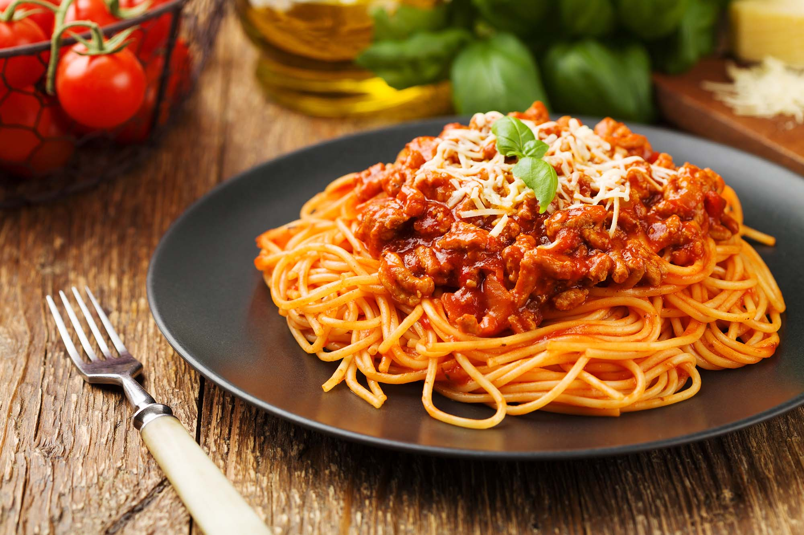

Spaghetti sauce recipe

Description
This spaghetti sauce will convince everyone you're the best chef in the world.
99 percent off chefs recommends this recipe!
Ingredients
- 1 pound ground beef
- 1 medium onion, chopped
- 4 cloves garlic, minced
- 1 small green bell pepper, diced
- 1 (28 ounce) can diced tomatoes
- 1 (16 ounce) can tomato sauce
- 1 (6 ounce) can tomato paste
- 2 teaspoons dried oregano
- 2 teaspoons dried basil
- 1 teaspoon salt
- ½ teaspoon ground black pepper
Steps
- Gather all your ingredients.
-
Combine ground beef, onion, garlic, and green pepper in a large saucepan over
medium-high heat. Cook and stir until meat is browned and crumbly and vegetables are tender,
5 to 7 minutes. Drain grease.
-
Stir diced tomatoes, tomato sauce, and tomato paste into the pan. Season with oregano, basil,
salt, and pepper. Simmer spaghetti sauce for 1 hour, stirring occasionally.
-
Serve hot and enjoy!
- In a mixing bowl, combine ricotta cheese with egg, remaining 2 tablespoons parsley, and 1/2 teaspoon salt.
- Preheat the oven to 375 degrees F (190 degrees C).
-
To assemble, spread 1 1/2 cups of meat sauce in the bottom of a 9x13-inch baking dish. Arrange 6 noodles
lengthwise over meat sauce. Spread with 1/2 of the ricotta cheese mixture. Top with 1/3 of the mozzarella cheese slices.
Spoon 1 1/2 cups meat sauce over mozzarella, and sprinkle with 1/4 cup Parmesan cheese.
-
Repeat layers, and top with remaining mozzarella and Parmesan cheese. Cover with foil: to prevent sticking,
either spray foil with cooking spray or make sure the foil does not touch the cheese.
- Bake in the preheated oven for 25 minutes. Remove the foil and bake for an additional 25 minutes.
- Rest lasagna for 15 minutes before serving.